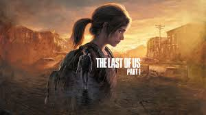

Ask any gamer and they would probably be able to give you a list of all their favorite games. But the more interesting follow up question is, "why?" Different people play video games for different reasons. For relaxation, competition, or if you're like me for a good story. This isn't going to be another top 10 games list; there are plenty of those. No, I wanted to make a list of games that I feel have had the biggest impact on my Life. Don't worry, I widdled the list down to five to save us all some time. Maybe in the future I'll do my top ten, but for now lets get started.
Life is Strange
Life is Strange may seem like the oddball of this list since it's the only one that doesn't have combat involved, but trust me it belongs here. If I'm going to talk about games that had a profound emotional impact on me, then I have to include this one in the conversation. The core game play of Life is Strange is incredibly simplistic in the sense that all you have to day is choose your responses in conversations and interact with the environment. It's well written characters are the main focus and it shows. We follow Max after she moves back to her hometown and reconnects with her best friend that she hasn't seen in years. After witnessing a traumatic event she discovers she has the ability to rewind time. Using her new powers she tries to help others around her while also trying to solve the murder of another student. The game throws many hard choices in your path, and watching all of the consequences unfold is very bittersweet.
Red Dead Redemption 2
While technically a sequel, Red Dead 2 takes place before the events of the first game. In spite of the fact you already know the fates of many of its characters, Red Dead still manages to craft one of the best narrative experiences I've ever witnessed. Author Morgan, our main character, is quite possibly the best protagonist in video game history. His only real competition is Joel Miller, which we'll talk about later in this list. This is one of those games that leaves a hole in your chest when you finally put the controller down. The game does an incredible job showing you what kind of man Author is and how he impacts the lives around him. It helps that all of the supporting cast, and even many of the regular NPCs are also unforgettable by themselves.
The Last of Us
Another tear jerker, the Last of Us tells the story of Joel Miller, a smuggler in the zombie apocalypse, and Ellie the teenage girl who may be the cure humanity needs. Though he starts off jaded and only thinking of Ellie as cargo, we get to see Joel grow as a character and form a bond with his pun loving companion. The game perfectly balances all of the tension of fighting off flesh eating monsters and delivering a well paced narrative. It's hard not to fall in love with this duo.
Bloodborne
This one was a surprise, even to me, for two reasons. For one, it's the only game in this list that didn't make me cry. Well, except maybe out of frustration. But secondly, it's a surprise because I avoided this game and all others of its genre because I really thought I would hate it. Bloodborne and all other souls-like games are unforgiving to say the least. The combat is brutal and forces you to stay patient and calculated if you want to survive. Death is a certainty, and because of that I was convinced that I would not have fun with it or any game like it. I'm happy to say I was wrong. What sets Bloodborne apart from the rest of this list is it doesn't tell you a story. It shows you everything you need and allows you to connect the dots. This Lovercraftian inspired masterpiece relies on atmosphere and cryptic dialogue to give you clues on what's actually going on. The city of Yharnam is a character in of itself, and even though the cursed inhabitants and monstrosities that plague the place are all too happy to try and disembowel you, it all just adds to the mystery. Bloodborne takes a spot on this list for feeding my love for eldritch horror and opening my eyes to a different style of game.
Mass Effect Trilogy
Okay, I know it's cheating but yes the final game on this list is actually three games in one. But in my defense it's hard not to think of these games as a single unit because they are so intertwined. This trilogy is near and dear to my heart and has had the most significant impact on my life as a gamer. Mass Effect was my first real experience with games that made me feel like my choices had weight. Not only do the decisions you make impact the story, they also transfer to the next game in the series creating an interconnected web leading to many different outcomes. That's why I can't separate these games on this list. I consider all of them to be one, big experience. But it doesn't stop there. The interactions that our main character has with their crew lead me to have legitimate affection towards many of them. The crewmates are the heart and soul of the trilogy.